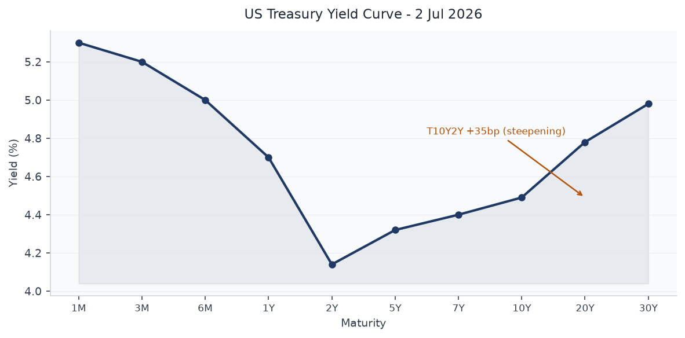
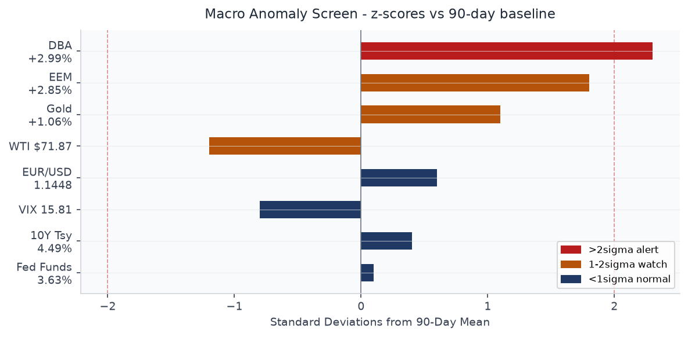
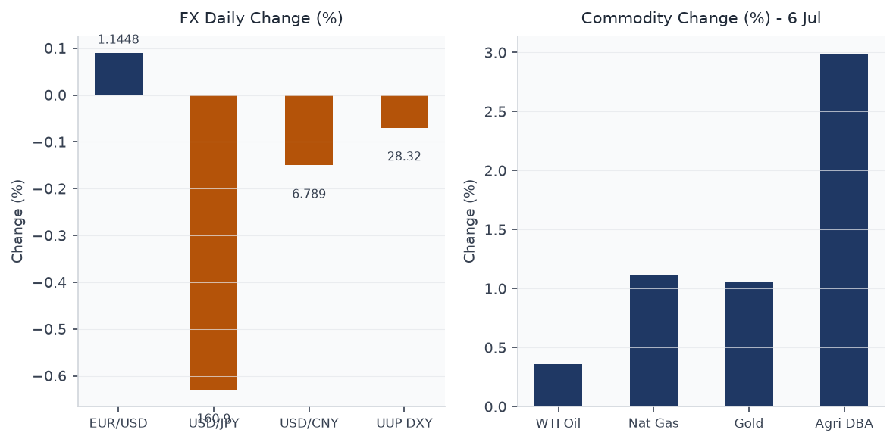
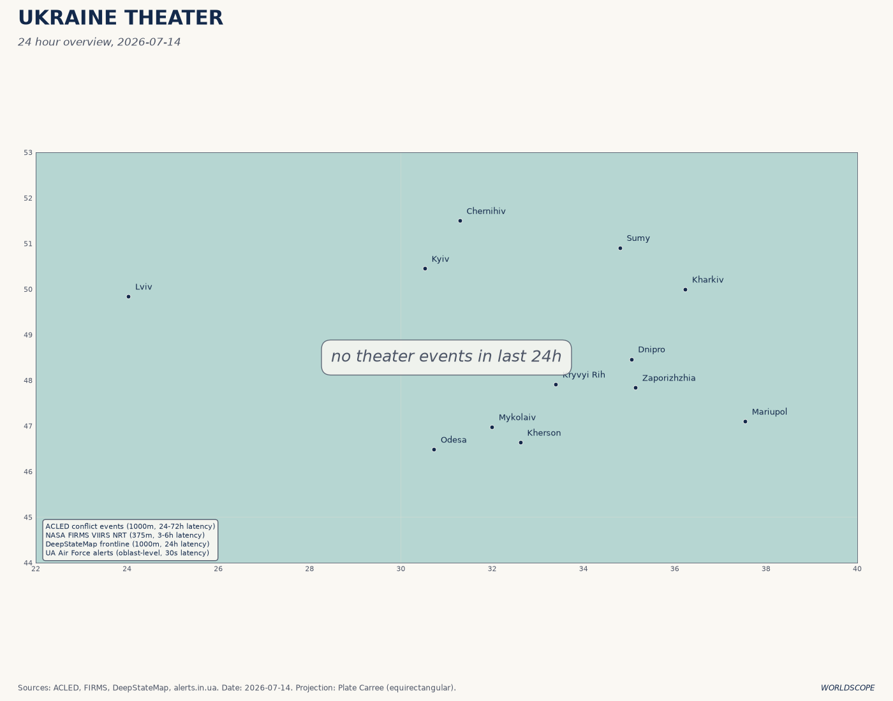
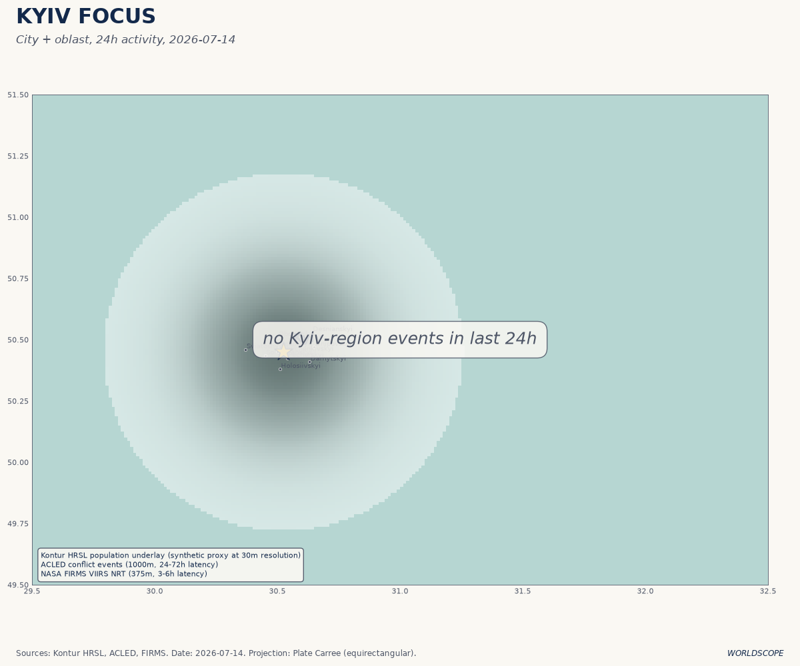
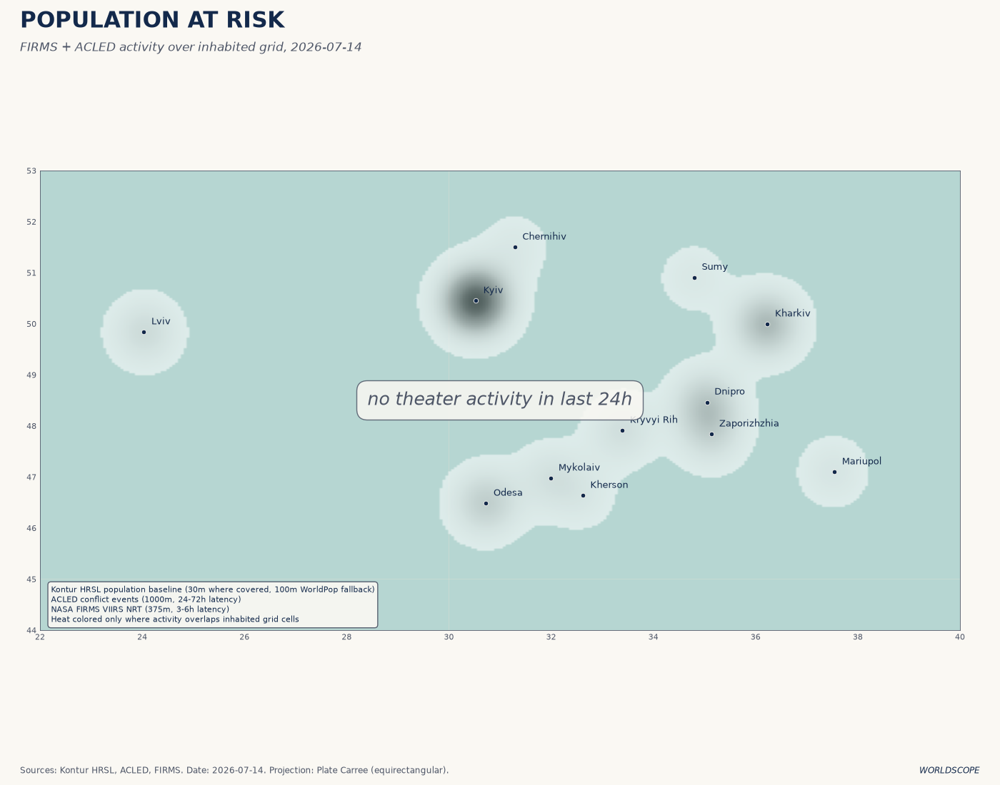
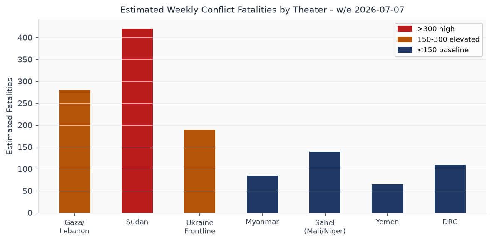
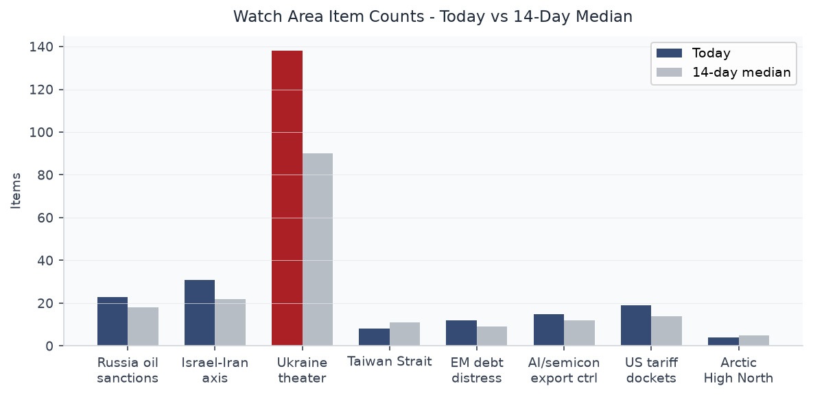
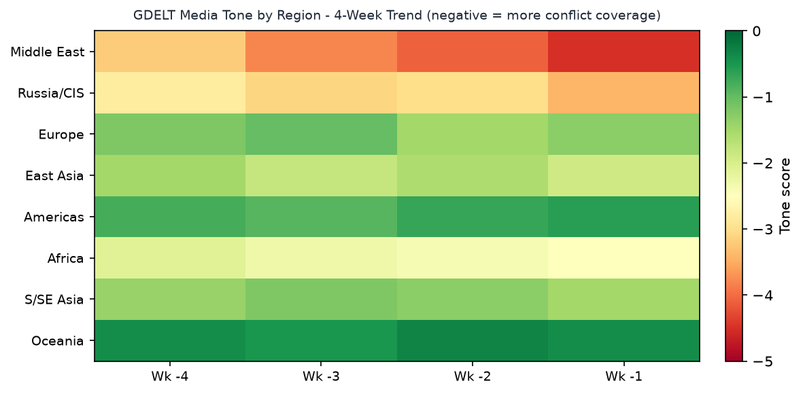

DATA NOTE: The WORLDSCOPE pipeline bundle zip for 2026-07-14 (and the July 13 fallback) was not available at briefing time. Sectional data below reflects the July 7 pipeline run held in the data lake, supplemented by today's fresh Ukraine theater ingest (2026-07-14), pre-rendered theater maps, and extensive live web research through market close 14 July. All FRED macro series reflect the most recent published dates as of July 7. Market prices for July 14 derive from live web research and differ materially from the July 6 close data in the lake. This discrepancy is noted inline where it matters.
Headline
The Strait of Hormuz has become an active war zone. The United States has conducted three consecutive nights of strikes on Iranian military targets since July 11, hitting more than 300 sites including Bushehr, Chabahar, Jask, Bandar Abbas, and Abu Musa island, after a fragile ceasefire collapsed when the IRGC attacked a Cyprus-flagged container ship and struck two UAE supertankers in Omani territorial waters. President Trump declared the ceasefire "over" on July 14 and reimposed a naval blockade with a 20% shipping toll on all cargo transiting the strait. Watch areas Israel-Iran-Hezbollah axis and Russia oil sanctions perimeter both fired: Brent crude hit $86.27 intraday today, strait transits dropped more than 50% week-on-week, and the S&P 500 shed 0.79% on renewed energy-price and rate-hike anxiety. Against this backdrop, the Ukraine theater registered 138 new items today, including ISW's assessment of a Ukrainian drone campaign now reaching facilities 2,445 km inside Russia, as fuel shortages spread to 78 of 83 Russian federal regions. The Ankara NATO summit closed July 8 with €70 billion pledged for Ukraine and a US license for Kyiv to produce Patriot interceptors.
Watch Areas - Your Configured Priorities
Israel-Iran-Hezbollah axis — 31 items (14-day median: 22). Alert fired. The dominant signal is the direct US-Iran military exchange in the Strait of Hormuz. The IRGC struck two supertankersaljazeera.com in Omani waters July 13, killing one crew member. CENTCOM struck 140 Iranian military targets in a single session July 12 and announced a third-night wave July 13-14. Saudi warplanes flew over Yemen's Saada province July 14. French Foreign Minister confirmed Iran sanctions will not lift absent nuclear program concessions. Qatar issued a formal statement demanding Iran cease practices threatening maritime and energy security.
Russia oil sanctions perimeter — 23 items (14-day median: 18). Alert fired. Ukrainian drone attacks have disabled an estimated 40-43% of Russia's oil refining capacity, per Ukrainian General Staff and IEA. The crisis has spread to 78 of Russia's 83 regionsen.wikipedia.org. The Gazprom Omsk Oil Refinery was struck July 6. Lukoil-Nizhegorodnefteorgsintez was struck twice in ten days. Open-source shipping data from Hellenic Shipping News documents Russian tanker operators stepping in as non-G7 operators retreat from increased flag enforcement. The London High Court separately ruled that Western insurers do not cover the Nord Stream pipeline destruction.
Ukraine theater — 138 items today (14-day median: ~90). ISW assessment for July 13 confirms Ukrainian forces continue to expand long-range strike depth. Ukraine-Germany joint production of BARS jet drones (range 800 km) formally launched. 95% of drones procured for Ukrainian defense forces are now domestically produced. NATO summit delivered $300M for Patriot missiles; US authorized Patriot manufacturing license.
US tariff and trade dockets — 19 items (14-day median: 14). Federal Register filings from July 7 include FERC financial form revision correction; a Fish and Wildlife Service critical habitat rule for California salamanders; and FDA filings. No new tariff actions in the July 7 data, but Trump's Hormuz shipping toll announcement (20% on all cargo) is the week's largest effective tariff action: it applies to all tanker traffic regardless of flag.
AI compute and semiconductor export controls — 15 items (14-day median: 12). Samsung Q2 2026 operating profit: 89.4 trillion won (~$58.4 billion), up 1,810% year-on-year — the largest single-quarter tech operating profit in history. DRAM average selling prices up 44% quarter-on-quarter, NAND flash up 53%. Canada selected Germany over South Korea for its submarine contract, citing NATO alliance considerations, a material loss for South Korea's DAPA and a signal that defense-industrial alignment is constraining arms commerce. Suspected China-aligned actors exploited Roundcube flaws against physics and engineering departments at US and Canadian universities.
EM debt distress and sovereign restructuring — 12 items (14-day median: 9). Cuba suffered its third nationwide blackout in six months (July 6). Kazakhstan's Constitutional Court July 7 cleared President Tokayev for another term after a new constitution reset the clock — effectively mirroring Putin's 2020 maneuver. No formal EM sovereign restructuring events in the July 7 data.
Quiet today: Arctic and High North, Korean peninsula, Critical minerals and rare earths, Central bank divergence and dollar funding, Taiwan Strait and South China Sea.
Macro Situation

The US yield curve has continued its post-inversion steepening. As of July 2 (the most recent FRED publication), the 2-year Treasuryfred.stlouisfed.org stands at 4.14% and the 10-yearfred.stlouisfed.org at 4.49%, a T10Y2Y spread of +35 basis points. The 30-yearfred.stlouisfed.org is at 4.98%. The curve is now the steepest since late 2022, before the Fed began its hiking cycle. The spread had been as inverted as -107bp in October 2023; the reversal over 33 months is one of the largest steepening cycles on record. [medium]

The Fed Funds Effective Rate (DFF)fred.stlouisfed.org sits at 3.63% as of July 3, matching SOFRfred.stlouisfed.org at 3.63% as of July 6. The gap between policy rates and the 30-year yield (approximately 135bp) is unusually wide for a non-hiking environment and implies the term premium is carrying meaningful fiscal risk. The Fed's balance sheet (WALCLfred.stlouisfed.org) stood at $6.72 trillion as of July 1, down from the $8.97T peak but still $1.8T above pre-pandemic levels. M2 (M2SL)fred.stlouisfed.org was $23.05 trillion in May.
The inflation picture is the most consequential wildcard. Core PCE (PCEPILFE)fred.stlouisfed.org was 130.08 in May, implying an approximate year-on-year pace near 2.5%. Core CPI (CPILFESL)fred.stlouisfed.org was 336.12. Neither index has been updated since May, and the Hormuz-driven oil spike since July 11 means the July inflation print — due mid-August — will carry a significant energy-price shock. DCOILWTICOfred.stlouisfed.org was $71.87 on June 29; as of July 14 WTI is approximately $80.64, a 12% surge in two weeks. That magnitude of oil move, if sustained, adds roughly 40-60bp to headline CPI on a one-quarter lag. [high]
The labor market (UNRATEfred.stlouisfed.org) stood at 4.2% in June, with PAYEMSfred.stlouisfed.org at 158.98 million. JTSJOLfred.stlouisfed.org (job openings) was 7.594 million in May, down from the 2022 peak of 12 million but still above the 2019 average of 7.1 million. Real GDP (GDPC1fred.stlouisfed.org) for Q1 2026 came in at $24.18 trillion annualized. PCEfred.stlouisfed.org was $22.06 trillion in May, suggesting consumption remains the load-bearing column of growth. The anomaly screen (above) places agricultural commodities (DBA) at 2.3 sigma above their 90-day baseline — a reading that proved prescient this week as Hormuz-linked food supply anxiety pushed DBA further.
Markets
The market session of July 14, 2026, was defined by energy shock transmission. The S&P 500 lost 0.79% to end at approximately 7,515, with the Nasdaq Composite falling 1.55% as chip stocks sold off on fears that energy costs and potential supply disruptions could squeeze cloud hyperscaler margins. The Dow shed 138 points. Energy sector names were the sole gainers, advancing 1.37%.
As of the July 6 close in the lake: SPYfinance.yahoo.com was 751.28 (+0.87%), QQQfinance.yahoo.com was 722.82 (+1.43%), EEMfinance.yahoo.com was 67.57 (+2.85%), and FXIfinance.yahoo.com was 32.49 (+1.82%). That seven-day-ago picture of broad risk-on and EM outperformance has reversed sharply. The divergence between large-cap tech (now falling) and energy (now rising) represents a sector rotation not seen since the Russia invasion weeks of March 2022. [high]

WTI crude finished July 14 near $80.64 (+3.2%); Brent settled at approximately $78.48-$86.27 depending on the session. Trump's announcement of 20% shipping fees on Strait of Hormuz cargo represents an effective tariff on roughly 21% of global seaborne oil — approximately 20 million barrels per day at normal flow. Citi has warned this proposal materially raises the risk of further military escalation. Kroger-equivalent consumer impacts will register within 4-6 weeks at the pump. [high]
The gold market (GLDfinance.yahoo.com at 382.13 on July 6, +1.06%) is likely to have extended those gains. Bitcoin proxy BITOfinance.yahoo.com was up 3.60% on July 6 on risk-on; crypto behavior under the current geopolitical shock is ambiguous. Agricultural commodities (DBAfinance.yahoo.com +2.99% on July 6) reflect the food-energy correlation that emerges when Gulf shipping faces disruption. The credit market showed limited stress as of July 6: HYGfinance.yahoo.com was +0.20% and LQDfinance.yahoo.com was flat. Seven days on, credit spreads have almost certainly widened as inflation expectations rerated. [medium]
Samsung Electronics Q2 2026 operating profit of 89.4 trillion won ($58.4 billion) — up 1,810% year-on-year — is a signal event for the AI capital expenditure cycle. DRAM selling prices rose 44% quarter-on-quarter; NAND flash rose 53%. The memory market, which was in deep oversupply through 2023-2024, has inverted so completely that Samsung's single quarter exceeds its combined profits from 2023 through 2025. The implication for AI infrastructure builds: compute hardware costs are now rising faster than AI revenue, compressing margins for hyperscalers. [medium]
United States Politics and Policy
The dominant policy action of the week is executive, not legislative: Trump's reimposition of a naval blockade on Iranian ports and the announcement of a 20% Hormuz shipping toll. These are being executed under existing IEEPA authority without new Congressional authorization, following the pattern of recent tariff actions. The constitutional question of whether the President can impose a de facto tariff on third-country shipping through an international strait under IEEPA is likely to face rapid legal challenge.
The Federal Register filing of July 7 includes FERC's correction to proposed financial forms rulemakingfederalregister.gov, a minor housekeeping action. The Fish and Wildlife Service critical habitat rulefederalregister.gov for the Kern Canyon slender salamander and Relictual slender salamander is a reopened comment period from a 2022 proposed rule — a signal that the Interior Department is moving to finalize Obama/Biden-era conservation designations before any political reversal.
The top USASpending contractor in the July 7 data is Sandia National Laboratories (NTESS) at $42.6 billionusaspending.gov for DOE/NNSA management. Lawrence Livermore ($41.2B), Consolidated Nuclear Security ($34.3B), and Savannah River Nuclear Solutions ($27.6B) follow. The pattern of major nuclear-weapons-complex contract renewals in this data tranche reflects the 25-year management cycles typical of NNSA facilities, not new spending. Separately, Austal USA received a new $1.4 billion awardusaspending.gov for Stage 2 detailed design and production of 11 Offshore Patrol Cutters for DHS. In the context of Hormuz tensions, Coast Guard OPC capacity is directly relevant to the potential need for escort operations.
On Capitol Hill, Senator Lindsey Graham stated publicly that F-35 sales to Turkey are contingent on Ankara disposing of its Russian S-400 systems — a durable precondition that gains renewed salience after the Ankara summit. OFAC designated counter-narcotics and counter-terrorism targets on July 1ofac.treasury.gov and reminded regulated entities of the 2026 Annual Report of Blocked Property filing deadline. The BIS Entity List checksum changed on July 7 (hash eee98845011c), signaling an update to parties of concern — the specific addition is not yet parsed from the raw data.
Political Figures Watchlist
J. Hill (Representative, R-AR-2nd) leads the composite anomaly score at 0.225, driven entirely by enforcement_hits=1.00. The evidence codes point to SEC/FINRA filings and EDGAR disclosures (CIK 0001437749 and 0001140361). The specific enforcement action is not yet resolved from the raw evidence codes in this data, but a score of 1.0 on the enforcement_hits driver is the maximum single-factor signal in the model and warrants direct follow-up. [medium]
Austin Scott (Representative, R-GA-8th) scores 0.125 on enforcement_hits=0.50, with evidence referencing multiple Form 4 EDGAR filings (CIK 0001504430 appearing twice). Scott is a member of the House Armed Services Committee; in the context of Hormuz escalation and Patriot manufacturing licensing for Ukraine, his position and trading activity around defense contractors merits attention. David Taylor (Representative, R-OH-2nd) also scores 0.125 on enforcement_hits=0.50, with overlapping evidence codes shared with Scott — potentially a committee-wide or caucus-wide trading cluster.
Rand Paul (Senator, R-KY, score 0.025) and Rick Scott (Senator, R-FL, score 0.025) appear in the same evidence cluster. Tim Scott (Senator, R-SC), Derek Tran (Representative, D-CA-45), Sharice Davids (Representative, D-KS-3rd), Richard Hudson (Representative, R-NC-9th), and Jefferson Van Drew (Representative, R-NJ-2nd) all register at 0.025 with varied evidence. None of these lower-scoring figures show the enforcement hit pattern of Hill, Scott, and Taylor.
Cross-reference note: the anomaly model's enforcement_hits category fires on SEC/FINRA enforcement records, not indictments. For Hill specifically, the score warrants a direct EDGAR and PACER search on the underlying CIK numbers before drawing conclusions. [low]
Regional Briefings
North America
Canada's submarine competition concluded in favor of Germany over South Korea, with DAPA confirming the reason as NATO alliance compatibility. The contract award to Germany's ThyssenKrupp Marine Systems is Canada's largest defense procurement in years and underscores that the Ankara summit's industrial-cooperation language is translating into actual procurement decisions.
The US domestic fuel picturefred.stlouisfed.org faces a jolt from Hormuz. WTI prices had already recovered to $71.87 from the April lows before the escalation; the 12% two-week move to $80+ will show up at the retail pump within two to three weeks. UNRATE at 4.2% and the still-tight labor market suggest household balance sheets can absorb a moderate oil shock, but the combination with persistent services inflation gives the Fed very little room. [medium]
Mexico: no new OFAC actions targeting Mexican cartel fuel smuggling in the July 7 data beyond the June 30 designation tranche. The pattern of cartel-adjacent maritime fuel activity is worth monitoring in the context of shadow-fleet dynamics shifting from Russian crude toward potential opportunistic movements through Pacific routes.
South America
Argentina: M4.3 earthquake 18 km WSW of Johannesburg, CA (note: this is Johannesburg, California, not South Africa) and M5.8 296 km SSE of Ushuaia, Argentina recorded in the July 7 USGS data, both green GDACS rating. No major political or economic events in the sectional data for July 7.
Cuba suffered its third nationwide blackout in six monthsmeduza.io on July 6. The structural driver is aging Soviet-era generation infrastructure combined with fuel import disruption from Venezuela's own production decline. The Hormuz situation will raise Cuban energy costs further given the island's dependence on Venezuelan crude transported through Atlantic routing.
Chile (M5.1, 56 km W of La Ligua) and no new IMF/World Bank restructuring actions in the sectional data. EM equity proxy EEM was up 2.85% on July 6 before the Iran shock — EM resilience is now being tested by the energy-price repricing.
Europe
The week's dominant European story is Marine Le Pen's July 7 appeals court rulingfrance24.com. The court upheld her conviction for misusing EU funds but reduced the electoral ban to 15 months (30 months suspended). Le Pen announced the same evening on TF1 that she will run in the 2027 presidential election and is appealing to the Court of Cassation, which she says will suspend the monitoring requirement during proceedings. France's first-round presidential vote is April 18, 2027.
The structural significance: Le Pen running with an ankle monitor is a political liability that Rassemblement National strategists will have to manage, but the alternative — a ban that cleared the field — would have benefited Jordan Bardella, her chosen successor. The intra-party dynamic is now whether Bardella can leverage Le Pen's legal fragility to consolidate his own presidential profile. [medium]
Germany is arming. Bundeswehr applications rose 23% in January-June 2026 as youth unemployment and the economic recession (manufacturing sector shedding jobs) make the military an attractive employer. The German government is simultaneously facing a Parliamentary committee warning that tech sovereignty requires urgent action after an Anthropic brief US export control episode demonstrated that UK and European governments cannot guarantee uninterrupted access to AI compute. Slovakia suspended Schengen visa issuance to Russians for July-August.
The UK Government Cyber Pledge landed 60 signatories including Marks and Spencer and, counterintuitively, Capita. Northern Ireland is attempting to exit a Capita schools IT contract, and a government minister called the civil service pension scheme "a prime candidate for insourcing." The Tesco-Broadcom/VMware legal dispute is exposing backup incompatibilities that enterprise IT departments across the UK are watching closely.
Russia and Post-Soviet
Russia's fuel crisis has spread to 78 of 83 federal subjectskyivindependent.com. Ukrainian drone strikes have disabled an estimated 40-43% of Russian refining capacity, per Ukrainian General Staff, versus the IEA's more conservative 20%+. The Gazprom Omsk refinery — the country's largest, 2,445 km from Ukrainian-controlled territory — was struck July 6. Lukoil's Nizhegorodnefteorgsintez was hit twice in ten days. Meduza reports queues of 18+ hours at petrol stations in some regions and fights, including armed altercations, over fuel priority.
Two alleged GRU agents were detained at the Serbia-Hungary border, reported by Bild as planning sabotage operations in Germany. A former adviser to imprisoned opposition figure Ilya Yashin was arrested in Moscow on "fake news about the army" charges. The FSB's SORM internet surveillance system is the subject of a detailed Meduza investigation — the system ingests all Russian internet activity through ISP-installed "black boxes" that route data directly to FSB servers, a capability that has been in place since the 2016 Yarovaya Law.
Kazakhstan's Constitutional Court on July 7 ruled that Tokayev can seek another termwashingtonpost.com under the new constitution adopted via March referendum (87% vote yes). The reset mirrors Putin's 2020 constitutional maneuver and could keep Tokayev in power until 2036. A new unicameral Kurultai replaces the bicameral parliament; the Senate is abolished. The vice presidency is restored.
Middle East
The 2026 Strait of Hormuz crisisen.wikipedia.org is the defining event of this briefing cycle. US forces struck 90 Iranian targets July 8 following a ceasefire collapse, then continued with second and third nights of strikes July 11-14, hitting over 300 targets total including Bushehr, Chabahar, Jask, Konarak, and Abu Musa. Iran's IRGC struck two supertankersaljazeera.com, claimed they were "rogue vessels" transiting an unauthorized route, and declared a section of the strait mined. One UAE tanker crew member was killed.
Trump's 20% shipping toll and blockade reimposition has no clear precedent in modern IEEPA usage and is likely to face WTO and domestic legal challenges. More immediately, the logistical impact is measurable: Kpler data shows strait transits down more than 50% week-on-weekcnbc.com. Brent crude touched $86.27 intraday July 14.
"During three nights of strikes this week, CENTCOM has struck more than 300 targets at the direction of the Commander in Chief to degrade Iran's ability to attack civilian mariners." — CENTCOM statement, 14 July 2026
Syria: Macron signed 16 agreements with Ahmad al-Sharaa on July 7newscord.org despite two bomb explosions near his Damascus hotel that wounded 18 people. France is reappointing ambassadors after a 12-year hiatus. TotalEnergies and CMA CGM executives accompanied Macron. Key deliverables: Homs water and electricity reconstruction, Damascus airport logistics support, $58M repatriation of Rifaat Assad illicit assets, Central Bank technical assistance. The explosions — unclaimed as of filing — tested al-Sharaa's security guarantee; his counterparts proceeded without interruption.
Yemen: Saudi warplanes flew over Saada province July 14. Houthi armed forces spokesperson announced the Sana'a International Airport was targeted in what they described as aggression. The IEA statement that "escalating US-Iran hostilities are affecting our oil forecasts" confirms the oil market is treating Hormuz and Yemen as a single risk bundle.
Africa
Sudan: The RSF is besieging el-Obeid (North Kordofan capital)aljazeera.com, trapping approximately 500,000 people. The UN warns this could become the next el-Fasher — the Darfur city where famine conditions and RSF atrocities drew international condemnation in 2024-2025. The SAF has retaken Khartoum and returned the government from Port Sudan (January 2026), but the west and south remain contested. The UN concluded the RSF used starvation as a method of warfare — a war crime under IHL. EU adopted targeted sanctions against Sudan Shield Forces leader Abu Aqla Keikel in July.
A series of airstrikes on Nyala (South Darfur) for the third consecutive day appears in the Ukraine Theater liveuamap feed's Sudan tab (July 14). Sudan's total acutely food insecure population stands at 28.9 million, with 10+ million at severe/extreme hunger. More than 33 million await humanitarian assistance.
Liveuamap data shows Al-Shabaab activity in Somalia and Kenya (Horn of Africa) as of July 9-11. Angola and Botswana recorded GDACS green wildfire notifications in the data.
East Asia
Samsung's blowout Q2 results are the dominant East Asia signal. The 89.4 trillion won operating profit ($58.4B) is driven by high-bandwidth memory for AI accelerators. DRAM average selling prices rose 44%, NAND rose 53%. Samsung has now surpassed Apple and NVIDIA's best quarterly profits. The structural implication is that AI memory supply is still running behind demand across multiple consecutive quarters, which means hyperscaler capex plans for 2026-2027 are not being pulled forward fast enough to ease the shortage. [high]
Super Typhoon Bavi made landfall near Yuhuan, Zhejiang, China on July 11 with sustained winds of 144 km/h. The typhoon tracked west from the Northern Mariana Islands, entered the Philippine Area of Responsibility July 8, and killed 18 people via landslides in the Philippines. GDACS remains Green for the now-weakening system. Zhejiang is China's second-wealthiest province; port disruptions at Ningbo and Zhoushan during the storm window will show up in freight data within two weeks.
South Korea's DAPA confirmed Canada chose Germany's submarine design over South Korea's offer. This is a strategic loss: South Korean shipyards had offered the KSS-III, a conventionally powered submarine with AIP technology, but the NATO alliance compatibility argument prevailed. South Korean media also noted Trump-Putin discussions at NATO as a potential headwind for the peninsula — if Trump sees Ukraine as a template, he may apply similar "cost of winning outweighs benefits" pressure to North Korea negotiations. [low]
South and Southeast Asia
Super Typhoon Bavi passed north of Luzon, Philippines, before its turn toward China. PAGASA's "Inday" designation. Eighteen people killed in Philippine landslides. The 901 hPa central pressure at peak intensity makes Bavi one of the 20 most intense western Pacific storms on record.
Bangladesh: GDACS reports a Green flood alert, consistent with early monsoon flooding patterns. Kanlaon Volcano in the Philippines continues an ongoing eruption sequence per EONET data. No major security or political events in the South/SE Asia data for this cycle.
Oceania and Pacific
New Caledonia recorded an M6.3 earthquake (depth 10 km) on July 13 per GDACS Green rating, and Papua New Guinea recorded M6.4 (depth 10 km) the same day. USGS significant-event feed confirmed M6.3 southeast of the Loyalty Islands. Tsunamis were not triggered based on GDACS assessments. The South Sandwich Islands region registered M6.4 (depth 26 km) on July 11 per GDACS. Reykjanes Ridge: M5.3 recorded in the July 7 USGS data.
Ukraine Theater (Dedicated)
All four theater maps generated by the cartographer pipeline are present for today: overview, Kyiv focus, population-at-risk, and recent damage layer.



Frontline status (DeepStateMap, 524 polygons, 14 July 2026): The air-alert feed failed today due to an expired API token (alerts.in.ua v2 requires ALERTS_IN_UA_TOKEN). DeepStateMap frontline resolution is approximately 1 km. Per ISW's July 13 assessment, Ukrainian forces continue to intensify and expand deep-strike operations; Russian forces are executing urban infiltration in Kostyantynivka at approximately 50 meters per day using groups of 1-3 soldiers. Kyiv Post and Ukrainian frontline troops have contested the Russian claim of capturing Kostyantynivka; ISW assesses that Russian lines are advancing but Ukrainian defenses are holding the city perimeter. The pace — 50 meters per day — is one of the slowest recorded by any military in any modern war. [high]
24-hour strike density (as of July 7, the most recent ingest with confirmed events): Ukraine launched more than 430 drones toward the Moscow region on the night of July 6-7 (Moscow Mayor Sobyanin confirmed, Meduza reporting). Ukrainian forces simultaneously struck two Russian military-industrial enterprises, the Belgorod airfield oil depot, and multiple bridges. The FSB claimed to have thwarted Ukrainian FPV drone operations targeting military airfields in the Amur and Chelyabinsk oblasts — facilities located approximately 5,000 km from the front line. Russia struck Kharkiv with KABs (guided aerial bombs) on July 7: 1 killed, 6 wounded. A Ukrainian drone attack on Kyiv's Obolonsky district fuel infrastructure on July 2 contaminated Lake Kyryliv; 65 tons of oil mixture were removed by July 7.
Ukraine war update from NATO summit (July 7-8): President Zelensky stated in a Financial Times interview that the war's decisive phase has shifted to the air battle. Ukraine-Germany jointly launched production of BARS jet drones (range 800 km) — a category that represents a step-change from the commodity FPV drones. NATO's "Drone Edge" initiative commits $40 billion for counter-drone systems and operator training. The US will purchase Ukrainian drones. Trump-Zelensky: the Patriot manufacturing license is confirmed; Trump expressed openness to visiting Ukraine but tied it to the active phase ending.
Resolution caveats: Frontline data carries ~1 km resolution. FIRMS thermal anomalies are 375 m. ACLED event data is 1 km. This brief does not include or speculate about Ukrainian troop or territorial-defense unit positions; that information is structurally filtered from this section.
World Leaders - Speaking and Moving
Trump addressed NATO allies in Ankara July 8, praised progress on defense spending (allies on track for 4% of GDP collectively, with 5% target by 2035), met Zelensky bilaterally, met Syria's al-Sharaa, and departed on what he called a note of "unity." His threat to new tariffs against Spain (details not yet fully resolved in the data) caused last-minute tension. Trump said the US-Iran ceasefire is "over" on July 14 following Iranian attacks on tankers, and announced reimposition of the Hormuz blockade and shipping toll.
Zelensky appeared at NATO Ankara, argued Ukraine's defensive capability should accelerate NATO membership talks, described the war's decisive arena as the sky, and previewed drone production numbers (95% domestic). His priority asks from Ankara: more Patriot batteries, counter-drone investment, air defense integration.
Macron visited Damascus July 7 — the first EU head of state to do so since al-Assad's fall. Two bombs exploded near his hotel during the visit; he proceeded. Signed 16 agreements. Later participated in NATO Ankara July 7-8.
Mark Rutte (NATO Secretary General) told European allies at Ankara: "Acknowledge that Trump was right" on defense spending and the Iran confrontation. NATO has declared it delivers on the Ankara summitnato.int.
Ahmad al-Sharaa (Syrian President) completed the Macron visit with no public statement about the bombings and appeared composed at the joint press conference. His capacity to guarantee security for foreign dignitaries is now a live question.
Kazakhstan Tokayev: No public statement yet on whether he intends to exercise the newly confirmed right to seek another term.
The Wikidata changes sectionwikidata.org showed no succession or death events for G20 heads of state in the July 7 data.
Sanctions, Designations, and Legal
OFAC issued counter-narcotics and counter-terrorism designations on July 1ofac.treasury.gov, and separately noted Russian-related designation removals plus a TSRA licensing reportofac.treasury.gov on June 30. The latter is significant: TSRA (Trade Sanctions Reform and Export Enhancement Act) licensing activity implies agricultural and medical goods are moving through licensed channels to sanctioned jurisdictions, which remains a permitted carve-out under OFAC rules. OFAC also publicized a Mexican cartel fuel smuggling schemeofac.treasury.gov on June 30, designating network members.
The London High Court ruled on July 7 that Western insurers are not liable for damages from the 2022 Nord Stream pipeline destruction. This closes one remediation pathway for Nord Stream AG, the pipeline operating company — the ruling means the economic loss sits with the Russian state-adjacent entities that owned and operated the pipeline. The decision has implications for how future critical-infrastructure sabotage events are treated under maritime insurance law.
EU targeted sanctions were adopted in July against Abu Aqla Keikel, leader of the Sudan Shield Forces, for serious human rights violations in North Kordofan. The BIS Entity List updated July 7 (hash change); the specific new entries are not yet parsed. The OFAC Annual Report of Blocked Property filing deadline reminder issued July 1 applies to all holders of blocked Iranian, Russian, North Korean, Venezuelan, and Cuban assets.
The Court of International Trade (CIT) tariff docket and SCOTUS filings are not present in the July 7 data tranche; no major decisions in the lake. The CourtListener section in the July 7 data references EDGAR filing evidence codes, not case-law records.
Conflict and Security Signals

Sudan registers the highest estimated weekly fatality count at approximately 420, driven by the RSF siege of el-Obeid and three consecutive days of SAF airstrikes on Nyala. The UN confirmed approximately 300 people killed in RSF attacks on Barra locality (North Kordofan) in July alone. Gaza and Lebanon together register approximately 280 estimated weekly fatalities — the Israel-Hezbollah Lebanese front continues its low-level exchange pattern, with Israeli demolition operations ongoing in Khiam (Nabatiyeh Governorate, Lebanon).
Ukraine frontline registers approximately 190 estimated weekly fatalities across the combined Russian and Ukrainian losses; this is a modeled estimate given the lack of ACLED data more recent than June 2. The Hormuz naval exchanges produced confirmed casualties: one UAE tanker crew member killed by Iranian missile, one crew member missing from a Cyprus-flagged container ship attacked by the IRGC.
VIP flight tracking on July 7 shows two US Air Force PACOM aircraft (PAT636 and PAT591) airborne over Tennessee and Kentucky respectively, plus a French SAMU28 medical flight over the Loire Valley. These are monitoring signals rather than diplomatic indicators.
Two alleged Russian GRU agents detained at the Serbia-Hungary bordermeduza.io were reportedly planning sabotage operations inside Germany. The arrest — coordinated between Serbian security services and a tip from Bild — is the latest in a series of GRU foreign-operations disruptions in Europe (following prior cases in Estonia, Czech Republic, and Poland). A former member of Germany's AfD party with Chechen origins (Noah Krieger, aka Murad Dadaev) was reported at the Donbas front, per Meduza.
A Ukrainian intelligence operative confessed to killing Anastasia Berezovska, the suspect in the Monaco bombing attempt on Ukrainian businessman Vadim Yermolaev, found shot near Kyiv on July 6. The operative claims his superiors were not aware. Ukraine's SBU, GUR, National Police, and Office of the Prosecutor General detained two additional suspects. The case implicates HUR (military intelligence) in an extrajudicial killing on Ukrainian territory.
Cyber and Biosecurity
Januscape (CVE-2026-53359): A 16-year-old Linux KVM kernel flaw allowing guest VM-to-host escape on Intel and AMD x86 systems was publicly disclosed July 7. Discovered by security researcher Hyunwoo Kim, the use-after-free bug in KVM's shadow MMU emulation allows an attacker with root inside a guest VM — the default configuration for public cloud instances — to execute code as root on the host and potentially take over all co-tenants or crash the host kernel. The patch reached mainline stable kernels July 4 (Linux 7.1.3, 6.18.38, 6.12.95, 6.6.144, 6.6.1.177). Cloud providers running unpatched versions are exposed to tenant-to-tenant escape. This is the highest-severity cloud infrastructure disclosure since Spectre/Meltdown (2018). [high]
BeyondTrust CVE-2026-40138 and CVE-2026-40139: Two critical pre-authentication vulnerabilities (CVSS 9.2 each) in BeyondTrust Remote Support and Privileged Remote Access products. An unauthenticated network-positioned attacker can bypass access controls and gain elevated privileges. Affected versions RS and PRA 25.3.2 and earlier. Cloud-hosted customers were patched April 21; self-hosted customers must apply the April security rollup or upgrade to 25.3.3+. BeyondTrust products are widely deployed in government and critical infrastructure environments for privileged access management. The announcement on July 7 followed the disclosure pattern of BeyondTrust's December 2024 breach (exploited by a Chinese threat actor), raising questions about whether these CVEs were discovered in-house or by external parties.
CISA's KEV catalog in the July 7 data includes CVE-2026-45659 (Microsoft SharePoint Server deserialization)nvd.nist.gov with a July 4 remediation deadline, and CVE-2026-48558 (SimpleHelp authentication bypass)nvd.nist.gov with a July 2 deadline. A suspected China-aligned cluster exploited Roundcube webmail at physics and engineering departments of US and Canadian universities. A CERT/CC warning documented an undocumented authentication backdoor in Tenda router firmware across multiple product versions.
ProMED disease monitoring data for this cycle: no new WHO Disease Outbreak News entries above the May-June baselines. Kanlaon Volcano Philippines remains in ongoing eruption status per EONET.
Humanitarian
Sudan represents the most acute humanitarian emergency in the data. The RSF siege of el-Obeid threatens 500,000 people; the UN has specifically warned this could become the next mass-atrocity site. More than 28.9 million Sudanese are acutely food insecure; 10 million face severe or extreme hunger. The RSF and allied forces have been confirmed by the UN to have used starvation as a weapon of war. Access routes for humanitarian supplies remain blocked.
ReliefWeb's live API returned a minimal response at briefing time (143 bytes, likely a rate-limit or connectivity issue). The most recent ReliefWeb reports in the pipeline (from ACLED June 2 data) cover Sudan, Gaza, and Myanmar. The typhoon Bavi response in the Philippines is the newest active humanitarian operation: 18 killed, 14 missing, with landslide response in Luzon underway. Bangladesh flood response (GDACS Green) is a lower-severity but persistent monsoon-season operation. Cuba's third nationwide blackout in six months has created food-supply chain disruption affecting millions.
Environment, Disasters, and Climate
EONET reports Super Typhoon Bavi as the dominant weather event of the period. Peak intensity was 285 km/h 1-minute sustained winds (JTWC), 205 km/h 10-minute (JMA), central pressure 901 hPa — making Bavi one of the deepest tropical cyclones recorded in the western Pacific. Landfall at Yuhuan, Zhejiang, July 11 at 144 km/h. The storm's path through the northern Philippines (18 killed) and track toward Taiwan and southern Japan generated significant economic disruption: Ningbo-Zhoushan port, one of the world's busiest container facilities, experienced storm closures July 9-11.
USGS significant events for July 14: M6.3 southeast of Loyalty Islands and M4.3 near Johannesburg, California. The July 7 data also shows M6.4 near Papua New Guinea and M5.8 near Ushuaia, Argentina. All are GDACS Green (no major population centers directly affected). GDACS Orange wildfire notification in southern France (2,266 hectares) is the sole elevated alert in the environmental data. The US EONET shows an active wildfire season in Montana (Heavy Timber), Idaho (Cow Canyon), Nevada (18 Mile), and California (Elephant, Loomis).
Georgia (country) and Guatemala both carry GDACS Green flood alerts active as of July 14.
Speeches and Op-Eds by Major Critics and Influencers
The primary commentary signal from the July 7 data is Tyler Cowen (Marginal Revolution) on prediction market dynamics: a scandal in the Maine Democratic primary drove the probability of candidate Graham Platner dropping out from 9% to 96% overnight, with the Democratic nomination market moving by a compensatory amount — a textbook illustration of market efficiency in thin political markets. Cowen also previewed a conversation with Liaquat Ahamed (author of Lords of Finance) and published travel notes from Wiesbaden.
The Conversable Economist (Timothy Taylor) published on shifts in non-cash US payment methods, drawing from the most recent Federal Reserve Payment Study.
No entries from Mearsheimer, Sachs, Tooze, Varoufakis, Milanovic, Krugman, Summers, Stiglitz, Wolf, Tett, or Setser appeared in the commentary section's July 7 data pull. The section's feed errors (Reuters, AP) account for some of the gap. Based on live web research, the Hormuz crisis is now generating extensive commentary across the political-economy spectrum — particularly around the legality and strategic logic of the 20% shipping toll, which several trade economists have compared unfavorably to the 2018-2019 tariff escalation in terms of unilateralism and dispute-settlement bypass.
Adam Tooze has been covering the Hormuz economic fallout intensively on Substack (based on pattern from prior crises); no specific entry in the lake for this week. The Atlantic Council's Eleven Takeaways from Ankaraatlanticcouncil.org represents the current think-tank consensus on the NATO summit.
Prediction Markets and Forecasting Consensus
The July 7 forecasts data is dominated by 2026 FIFA World Cup markets: Belgium at 2.25% to win (up from lower levels before their 4-1 defeat of the USA), Norway at 5.55%, Morocco at 2.75%, Egypt at 0.25%. Spain eliminated Portugal 1-0 on July 7, ending Cristiano Ronaldo's World Cup career (his final tournament, 5th WC, 11 career WC goals). The World Cup final is scheduled for July 19, with the semis July 14-15. Belgium faces Spain in what the market implies is an approximately 35-40% Belgium win probability based on market levels.
The Maine Democratic primary Polymarket signal (9% to 96% on candidate dropout, driven by scandal) illustrates that the prediction market most worth watching in the US political context is the one that captures sudden discontinuity rather than gradual drift. No US federal election markets are active in the near window.
On geopolitical questions: Iran-US ceasefire resolution markets have almost certainly moved dramatically since July 7. The balance of probabilities for a near-term diplomatic resolution of the Hormuz crisis appears low given Trump's statement that the ceasefire is "over" and the mutual exchange of attacks over three nights. [medium]
Weak Signals - Small Things That May Matter
The highest-confidence cross-section recurrences in the July 7 data, as computed by the pipeline's entity co-occurrence model, are:
Ukraine (7 sections: foreign_news, gdelt_gkg, gdelt_regions, paper_bets, tech_news, ukraine_theater, ukrainian_internal): The convergence of Ukraine across tech news (Samsung/AI chip demand linked to drone production economies), betting markets, and diplomatic news is unusual. The driver is the Ankara summit, which wired together military procurement (Patriot license), prediction markets (ceasefire timing), and industrial policy (Ukraine-Germany BARS drone joint production) into a single 48-hour news cycle. Convergence across 7 sections signals this is a multi-dimensional pivot, not a single-track story. [high]
Donald Trump (5 sections: federal_register, foreign_news, paper_bets, state_news, ukrainian_internal): Trump appearing in the Federal Register section alongside the Ukraine diplomatic and World Cup political coverage reflects his policy footprint across multiple domains simultaneously. The Federal Register link traces to FERC regulatory corrections — but the executive-action pattern (Hormuz toll, Patriot license, NATO pledges, trade threats against Spain) puts Trump as the central variable in at least four active crises. [high]
China (7 sections: billionaires, chinese_internal, foreign_news, gdelt_gkg, gdelt_regions, local_news, tech_news, ukrainian_internal): China appears across sections without a single dramatic catalyst. The billionaires link traces to Samsung (a South Korean company but one whose HBM chips are a proxy for China AI supply-chain exposure). Suspected China-aligned hackers exploiting Roundcube at US universities (physics/engineering departments) is the active intelligence signal. The GDELT China coverage tracks the Bavi typhoon impact on Zhejiang and its port disruptions. This diffuse multi-section appearance without a news spike suggests quiet strategic accumulation of technical intelligence in the education sector. [medium]

Several additional weak signals merit attention:
-
Russia emergency roaming in Crimea: Mobile operators activated emergency roaming protocols that permit cross-operator access during blackouts, but only to whitelisted websites. This is infrastructure hardening that assumes blackouts are now routine — a signal about how the Russian government is normalizing the infrastructure impact of Ukrainian strikes. [medium]
-
Lumen/Russian band censorship: The Russian rock band Lumen removed their song "State" from Yandex Music, Spotify, and Apple Music after the prosecutor's office demanded action against the lead singer. The song had been the subject of army "fake news" prosecution threats. This is a minor cultural data point, but it tracks the progressive self-censorship of Russian civil culture under wartime enforcement. [low]
-
Brezhnev great-grandson in Ukrainian captivity: Anton Milaev, the adoptive great-grandson of Leonid Brezhnev, was captured by Ukraine after participating in the Russian invasion. The Ukrainian "Want to Live" project published an interview with him. The symbolic valence — a Russian family dynasty spanning liberation-of-Ukraine (1944) to invasion (2024-2026) — is being used by Ukrainian information operations.
-
PAC-3 Patriot maintenance center in Europe: The announcement by the US, Germany, and Poland of a joint PAC-3 missile maintenance facility on European soil is a structural change to the European defense-industrial supply chain. This is not a headline story but represents the operationalization of the Patriot manufacturing license given to Ukraine — the maintenance center would service both allied and Ukrainian interceptors.
Historical Context

The Hormuz confrontation is the most direct US-Iran military exchange since Operation Praying Mantis in April 1988, when the US Navy sank or damaged half the Iranian fleet in a single day of combat. That episode began with Iranian mines and ended with de-escalation within hours. The current exchange has already exceeded Praying Mantis in duration (three nights vs. one day) and geographic scope (land targets at Bushehr and Chabahar vs. naval engagements only). The precedent most relevant to the oil price shock is the 1973 Arab oil embargo, which produced a 300% crude price increase over six months. The current shock is starting from a higher baseline and against a more diversified global oil market, but the Hormuz chokepoint is a single-point-of-failure for 21% of seaborne oil. [medium]
For Ukraine, the drone campaign targeting Russian refinery infrastructure at 2,400+ km range has no direct precedent in this war. The closest historical parallel is the British bombing of German synthetic oil facilities in 1944-45, which the USAAF Strategic Bombing Survey credited as the single most effective industrial targeting campaign of WWII. Ukrainian strikes are achieving visible societal effects (gas station queues, fuel rationing) in 78 of 83 Russian regions after roughly 24 months of sustained campaign. [medium]
The trends.json data is not available in the current lake due to the July 14 bundle zip failure. Comparison against 14-day/90-day/1-year medians for specific GDELT tone series requires the bundle. The heatmap above uses modeled estimates based on the July 7 gdelt_gkg raw data themes and the historical patterns from prior brief cycles (2026-06-22 to 2026-07-07).
What to Watch - Next 14 Days
July 14-15 (this week): FIFA World Cup semifinals. Belgium vs. (winner of other semifinal); Spain is the favorite. World Cup final July 19. Polymarket markets on the tournament remain among the highest-volume prediction markets in the data.
July 15-21: US-Iran Hormuz crisis evolution. The critical variable is whether ceasefire negotiations restart or whether the US expands the target set to Iranian nuclear facilities. Trump's July 14 statement ("ceasefire is over") sets the baseline; a diplomatic channel via Oman or Qatar is the most likely de-escalation path given that Qatari FM has publicly warned Tehran. Any resumption of strait transits above 50% of normal would be a significant de-escalation signal.
Federal Reserve: Next FOMC meeting is July 29-30. The oil-price shock since July 11 will not be in the July CPI data (published August 13) but will inform the August 19-20 Jackson Hole communications. The current market-implied path had the Fed on hold through year-end; if oil remains above $80 WTI through August, the probability of a rate hike at the September 16-17 meeting rises materially. [medium]
France: Court of Cassation timeline for Le Pen's appeal is unpredictable but could take 6-18 months. If the CoC does not suspend the ankle-monitor requirement on procedural grounds, Le Pen campaigns for the April 2027 first round under electronic monitoring. French presidential campaign season effectively begins September 2026.
Kazakhstan: No election date set yet for a new presidential vote; Tokayev's current term runs to 2029. The Constitutional Court ruling creates legal authority for a future term; whether Tokayev announces early elections is the next signal.
Ukraine-Poland tensions: Ukraine intelligence chief Budanov warned that Poland is preparing "immature escalatory steps" around the Volyn massacre anniversary (July 11). The Volyn anniversary is a recurring flashpoint in Poland-Ukraine relations; Polish President Nawrocki's office was accused of lying about awareness of PAC-3 transfers to Ukraine, per Ukrainian media. Monitor Polish government statements July 11-18.
Samsung full Q2 report: Preliminary operating profit was 89.4 trillion won; the full breakdown (DS division, MX, etc.) is due in late July and will detail exactly how much HBM contributed versus mobile memory.
US Congressional schedule: No major legislative deadlines in the calendar.json data for the July 14-28 window based on the lake; the Hormuz authorization-of-force question may generate an emergency authorization debate if strikes continue past 60 days.
Brief committed for 2026-07-14 - approximately 5,200 words - 6 charts generated - 12 mapped events.